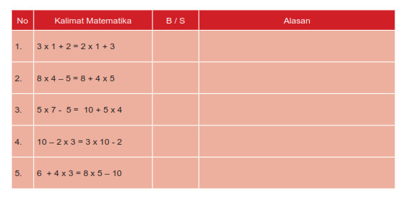

Ayo Berlatih
Aktivitas
Salah satu manfaat matahari adalah untuk mengeringkan pakaian. Pada waktu yang
sama Lani dan Beni menjemur baju. Lani menjemur 4 celana dan 4 pasang kaos kaki.
Sementara, Beni menjemur 5 pasang kaos kaki dan 2 celana. Apakah jumlah benda
yang Lani dan Beni jemur sama?
Buatlah kalimat matematika yang menunjukkan jumlah benda-benda tersebut !
Dari soal di atas, kita bisa menulis kalimat matematika berikut:
4 + 4 x 2 = 5 x 2 + 2, terdiri dari dua kalimat matematika, yaitu:
4 + 4 x 2 dan 5 x 2 + 2
4 + 8 = 12 dan 10 + 2 = 12
Jadi, -> 4 + 4 x 2 = 5 x 2 + 2
Tentukan apakah kalimat matematika dalam tabel berikut menunjukkan persamaan?
Tulis B bila benar dan S bila salah pada kolom yang tersedia. Kemudian jelaskan
alasannya.
